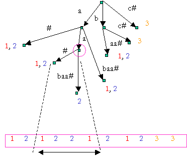
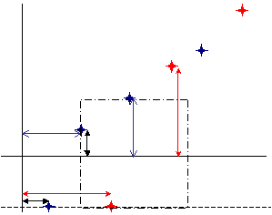
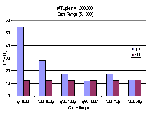
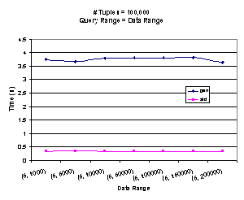
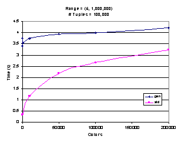

|
Ashwin
Kashyap Submitted in partial fulfillment for the course CS541 Databases Systems Course
Advisor: Prof. S. Muthukrishnan |
AbstractùColored range searching is a fundamental problem that arises in many applications like spatial databases, network routing, document retrieval, and sub-string indexing. In the general case, a set S, of colored geometric points are to be preprocessed so that given a query object q, the distinct colors of the objects intersected by q can be reported efficiently or the number of such colors can be counted efficiently. While optimal algorithms exist to solve these problems in general, there are not many databases that implement these algorithms. This is a survey of such algorithms and techniques. We also explore how we can implement some of these algorithms in a real-world database system; we then evaluate and analyze the performance of these techniques. The database used is PostgreSQL, which has good geometric primitives, including data types, operators and indexes.
Table Of Contents
II.ááá Motivation and Applications
A.ááá 1D color range searching
B.ááá 2D color range searching
B.ááá Generalized 1D Range Searching
C.ááá Colored Range Searching in 1D
List Of Figures
Figure 1: Document Retrieval problem
Figure 2: Illustration of the 1D Range searching Algorithm
Figure 3: Performance comparison of query execution times
Figure 4: Impact of data range on query execution time
Figure 5: Scalability of the algorithm as the number of colors increase
Figure 6: Scalability of the algorithm as the number of tuples increase
One of the prevalent problems in a lot of database applications is to report distinct categories of a given set of objects that meet some criteria, formally, this is known as the Colored Range Searching (CRS) problem. This is also known as the Intersection Searching problem and there are variations on this; either count the objects or report them, these are classified as the Counting problem and the Reporting problem.
CRS is a specific instance of the range-searching problem, which is thoroughly investigated in the database community and there exist efficient algorithms and data structures that are readily implemented in every commercial database system. CRS can be solved using the same general techniques as range searching, then iterating over the results we can either report or count the objects (this translates to the GROUP BY or the COUNT feature in SQL). While this is a straightforward solution, it is clearly inefficient and much work has been done in developing efficient data structures and algorithms.
There are several well-known algorithms and data structures on colored range searching and most of the research so far has been of theoretical interest, and no definitive results are know on the performance of these techniques in a real world database system. Most database systems are highly tuned for real world load and query scenarios and take into consideration various factors of I/O like block transfers and random transfers for implementing any given algorithm.
In almost all of the algorithms for CRS, augmented data structures are used to store additional information contained in the sub-tree at a given node, while this ensures that the number of tree traversals needed to find the required data is reduced, no results are known when parts of the data have to be retrieved from the disk. Clearly, these algorithms do not make distinctions between various types of disk accesses and assume a uniform cost model for data retrieval.á It would be interesting to compare performances after implementing some of these algorithms.
Some of the applications, which we expect to see a significant improvement in performance are:
|
Figure 1: Document Retrieval problem
|
© Consider a database that logs all IP packets traversing a router over time. IP packets have a structure; out of the total 32 bits, some higher order bits correspond to the network and are termed the network address. The rest of the lower order bits are termed as the host address. Queries are of the form ôgive me all network addresses of all packets that traversed the router in a certain time intervalö. Clearly, there are two ranges here, the time interval and the range of IP addresses having the same common prefix. The result of the query falls within the cross product of the two ranges. This is an example of a two dimensional color range searching. This is a particularly challenging application, and as high-speed networking becomes more common, the logs will grow bigger and it is very important for the database system to minimize the time taken to process the query.
© Given a set D of text documents d1, d2, à dk and a string pattern p, our goal is to efficiently list all documents that contain the string. The overall approach is to perform ôlocal encodingö which consists of chaining each document suffix to another nearby document based on some pair wise criteria. From this, range queries are generated, which have objects drawn from different documents, which may be thought of as different colors. This is the document-listing problem, it occurs very frequently in web searches, and [13] solves this problem optimally. Figure 1 Illustrates the problem; here each node represents a node in the suffix tree, which is built on the given library of documents. The leaves represent the n suffixes in the library.
© Matching sub-strings has become increasingly important, especially since XML databases are gaining popularity. It is well known that B-Trees are I/O optimal in one dimension, but no index structure with non-trivial query bounds is known for two-dimensional sub-string indexing. [9] Presents an algorithm to solve this efficiently. They largely rely on transformations of the problem to a version of Common Color Query (CCQ) in two-dimensions, this is a more general version of CRQ, in that there is more than one range and all of them are disjoint.
© Consider a database of mutual funds. Each fund has an annual total return and a factor that represents the fundÆs volatility. Clearly, each fund can be represented as a colored point in a plane. Generally, funds are classified into fund families they belong to. One might be interested in all funds having a certain range of volatility and another range of annual return. It is more efficient for an investor to consider the family of funds that meet the criteria instead of considering all the individual funds. This is an instance of the two-dimensional range-searching problem.
© Consider the above example, but if we are just interested in a range for the annual total return, the problem reduces to a colored range search in one-dimension.
These are the formal definitions of the various problems we discuss in this survey. These problems are addressed by various researchers under different names (intersection searching, range searching etc.), however, the underlying problem is essentially the same. Here we refer the color to denote the category of the object.
Given a set S, of n colored points on the x-axis, we need to preprocess the points such that for any query interval q = [x1, x2] we need to either report the distinct colors that meet the criteria or count them.
Given a set S, of n colored points in the plane, we need to preprocess the points such that for any query interval q = [x1, x2] ³ [y1, y2] we need to either report the distinct colors that meet the criteria or count them.
We are given P, a set of n colored points, we have to preprocess this so a query of the following form can be answered efficiently: Given a query point q = [q1, q2], the problem is to output the set of distinct colors on rectangles that contain q.
We are given an array A[1àN] of colors drawn from 1,à, C. We want to preprocess this array so that the following query can be answered efficiently: Given two non-overlapping intervals I1 and I2 in [1, N}, list the distinct colors that occur in both intervals I1 and I2.
The GROUP BY clause in an SQL query will gather all tuples together that contain data in the specified column(s) and will allow aggregate functions to be performed on the one or more columns.
For example:
SELECT max(salary), dept FROM employee GROUP BY dept;
This statement will select the maximum salary for the people in each unique department. Basically, the salary for the person who makes the most in each department will be displayed. Their salary and their department will be returned. We can use this technique to remove duplicates, however, this can be inefficient when the result set is large.
Most solutions deal separately with problems of different dimensions; here we consider, in deep, only the one‑dimensional case of the problem and give a brief overview how these can be extended in two dimensions. Solutions of higher dimensions are not discussed.
This [3] is a type of data structure that is used to speed up search problems and range queries. Suppose we have to search the same key in several sorted lists, each of size m. The obvious approach is to perform a binary search in each list û requires O(log n) operations for each list. Fractional cascading is a method of cross-linking those lists in such a way that the O(log n) cost of binary search has to be paid only once: to locate the key in one of the lists. The cross-links then allow the key to be located in each additional list with only a constant number of operations.á
[11] Describes a simpler method to transform the 1D colored Range searching problem to an instance of a set of points in a plane, such that any query will return only those points that are unique in color.
Given a set S, of n colored points on the x-axis and a query interval q = [x1, x2], we sort the distinct points of that color by non-decreasing x coordinate. For each point p of color c, let pred(p) be its predecessor in the sorted order; for the leftmost point of color c, we take the predecessor to be the point -Ñ. We then map p to the point pó = (p, pred(p)) in the plane and associate with it the color c. Let Só be the resulting set of points. Given a query interval q = [x1, x2], we map it to the grounded rectangle qó = [x1, x2] ³ [-Ñ, x1].
LEMMA
There is a point of color c in q = [x1, x2] if and only if there is a point of color c in [x1, x2] if and only if there is a point if color c in qó = [x1, x2] ³ [-Ñ, x1]. Moreover, if there is a point of color c in qó, then this point is unique.
PROOF
(‡) Let pó be a c-colored point in qó, where pó = (p, pred(p)) for some c-colored point p ð S. Since pó is in [x1, x2] ³ [‑Ñ, x1], it is clear that x1 ú p ú x2 and thus p ð [x1, x2].
(ˆ) let p be the leftmost point of color c in [x1, x2]. Thus x1 ú p ú x2 and since pred(p) Î [x1, x2], we have x1 > pred(p). It follows that pó = (p, pred(i)) is in [x1, x2] ³ [-Ñ, x1]. We prove that pó is the only point of color c in qó. Suppose for a contradiction that tó = (t, pred(t)) is another point of color c in qó. Thus we have x1 ú t ú x2. Since t > p, we also have pred(t) þ p þ x1. Thus tó cannot lie in qó û a contradiction. The claim follows.
The Lemma implies that we can solve the 1D color range searching problem by simply reporting the points in qó, without regard to colors. In other words, we have reduced the 1D color range searching problem to the standard grounded range-reporting problem in two dimensions.
Data structure used to represent consist of the following: For each color c, we maintain a balanced binary search tree, Tc, in which the c-colored points of S are stored in non-decreasing x order. We maintain the colors in a balanced search tree CT, and store with each color c in CT a pointer Tc. We also store the points in Só in a balanced priority search tree (PST). To answer query q = [l, r], we simply query the PST with qó = [l, r] ³ [‑Ñ, l] and report the colors of the points found. The query time is O(log n + k), where k is the number of points inside qó.
|

-Ñ |
As Figure 2 illustrates, the y-coordinate of a point is the same as the x‑coordinate of the predecessor point. Recall that the predecessor point of a point p will be a point with the same color and will precede the point p when sorted in non‑decreasing order. When a query [l, r] ³ [‑Ñ, l] is asked, it is easy to see why there will not be any duplicate points of the same color within the grounded query rectangle û the upper bound in the y‑axis is the same as the lower bound in the x‑axis, so if a point p is included then its successor will not be included. Note that the lower bound of the range is inclusive, while the upper bound is exclusive of the bound values.
This transformation is straightforward to implement in a database system û the points can be sorted and stored in B‑Tree instead of a binary search tree. Most database systems do not include any form of PST and in order to efficiently range-query the set of points in a plane, we need to index two columns (or 2D points). R‑Tree indexes are available in many popular commercial database systems and they are capable of indexing this kind of data. Even if R-Tree indexes are unavailable, most database systems can optimize query execution by examining the selectivity of the two ranges (in the x and the y axes respectively).á Consider the query [l, r] ³ [‑Ñ, l], it is interesting to note the inverse relationship in selectivity between the two ranges. PostgreSQL supports many types of indexes including R-Trees and we evaluate the performance with R-Tree indexes.
[8] Describes another method to pre-process the set, this however assumes that the points are in [0, U] and they are integers. Let P be a set of n colored points in [0, U] and let C denote the set of distinct colors in the point set P. First, consider the semi-infinite query q = [x1, Ñ]. For each color c ð C, we pick the point pc ð P with color c having the maximum value. Let Pmax denote the set of all such points, and let L be a link-list of these points sorted in non-decreasing order. To answer the query q, we simply walk the list L and output all colors with x þ x1. The query [‑Ñ, x2] can be answered similarly. To answer a query q = [x1, x2], we build a trie T[1] on the values of p ð P. For each node v ð T, let Pv denote the set of points contained in the sub-tree of T rooted at v. At each internal node v, we store a secondary structure, which consists of two semi-infinite query data structures Lv and Rv corresponding to the queries [q, Ñ] and [‑Ñ, q]. Lv and Rv are sorted linked lists containing either Pmax or Pmin as explained earlier. For every non-root node v ð T, let B(v) = 0 if v is a left child of its parent and B(v) = 1 otherwise. To search the trie T, we assign an index Iv for each non-root node v ð T. Iv is an integer whose bit representation corresponds to the concatenation of B(w)Æs, where w is in the path from root to v in T. The level of a node v is defined as the length of the path from the root to v in T. We then build a static hash table Hi on the indexes Iv in the hash table. The hash table Hi uses linear space and provides O(1) worst case lookup. The number of nodes in the trie T is O(n log U). Since each point p ð P might be stored at most once at each level in the lists Rv, Lv, and the height of the trie T is O(log U), the total size of the secondary structure is O(n log U). Hence the size of the entire data structure is O(n log U).
To construct the trie T, we sort the point set P to get the sorted list of Proot, and suppose we need to construct the ith level node z. Let v and w be the children of z in T. We partition the sorted list of points in Pz into sorted list of points in Pv and Pw and the construct the lists Lv and Rv. We now construct the hash table Hi on indexes Iv for all nodes v in level i.
If a query q = [x1, x2] is given, we find the leaf nodes z1 and z2 which store x1 and x2 and then compute the least common ancestor of z1 and z2 by finding the common prefix of the bit representation of x1 and x2, let this be k having a length l.á We can find the node v by searching for k in the hash table Hl, let e and f be the child of v. All the points p ð [x1, x2] are contained in Pe and Pf. To find the points, we take the union of the results from two semi-infinite queries [x1, Ñ] and [-Ñ, x2]. Each color in the output list is reported at most twice.
Clearly, this algorithm is more complex than [11] and tries are needed, which may not be present in many database systems, moreover the output is not free of duplicates and these must be eliminated.
Another interesting problem is the Common Colors Query (CCQ). In this problem, we are given an array A[1àN] of colors drawn from 1, à, C. We want to preprocess this array so that the following query can be answered efficiently: Given two non-overlapping intervals I1 and I2 in [1, N], list the distinct colors that occur in both intervals I1 and I2.
[9] Solves this problems optimally, the algorithm is as follows: We construct a matrix AA in which AA[i, j] = c if and only if A[i] = A[j] = c. Thus, AA is a [1, N] ³ [1, N] matrix. Any query to AA will be a rectangle, that is [a, b] ³ [c, d] and it returns the distinct colors in the rectangle. A query for the CCQ problem on array A with input intervals I1 and I2 is the same as a query to matrix AA with input I1 ³ I2; this means we need to solve the rectangle query on the matrix AA efficiently.
áá Preprocessing is done by considering the N columns of matrix AA and constructing a x‑adic grouping. That is, we consider metacolumns by concatenating columns kx2 + 1, kx2 + 2, à , kx2 + x2, for integers k and i. Clearly, the maximum possible value of I is O(logx (N)). Next, we linearize the metacolumns row-wise. The total size of the matrix AA is at most N2 / B disk pages. The total size of all metacolumns is O(N2 / B logx (N)) since each column is in at most O(logx (N)) metacolumns; this is the size of all the AAAk,is combined.
áá Query processing is done as follows: Given a query rectangle [a, b] ³ [c, d] on the matrix AA, we decompose [a, b] into its maximal, disjoint x-adic components (k1, i1), (k2, i2), à, (kl, il), that is [a, b] = [(klxi1 + 1)à (k1 + 1)xi1(k2xi2 + 1) à(k2 + 1)xi2+1 à (klxil + 1) à (kl + 1)xil]. The maximal decomposition of the x-adic components can be replaced by one of larger i, which can be easily found greedily: by starting from a and walking right to the closest x-adic endpoint one after the other, always taking the largest possible power of i. We then solve the CCQ problem on [a, b] ³ [c, d] by solving the CCQ problem on each of the x-adic components (kj, ij) above with interval [c, d] on the y-axis for the entire width. It is easy to observe that his is precisely the CRQ problem on the linearized array AAAkj, ij.
Most of the 2D techniques surveyed use some form of a persistent data structure and is non trivial to implement in any database system without further changes to the system itself. Both [11] and [8] have transformations and further describes a method to efficiently solve the CRS problem in two dimensions. The transformation uses more complex data structures and we will not investigate this further.
We implement the 1D color range searching algorithm described in [11] using the PostgreSQL 7.1.3-2 database system. All the tests were run on a dual processor PIII running at 700MHz with 128Mb main memory. The operating system was RedHat Linux 7.2. All code used in the experiments is available at: http://www.cs.rutgers.edu/~ashwink/db_project.
Two relations were created, namely gen and std with the following schemas:
CREATE TABLE gen (color in, x bigint, t1 text, t2 text, t3 text, t4 text, t5 text);
CREATE INDEX genidx ON gen USING BTREE (x);
|
Gen |
|
||||||
|
color int |
x bigint |
t1 text |
t2 text |
t3 text |
t4 text |
t5 text |
|
CREATE TABLE std (color in, coord point, t1 text, t2 text, t3 text, t4 text, t5 text);
CREATE INDEX stdidx ON std USING RTREE (box(coord, coord));
|
Std |
|
||||||
|
color int |
coord point |
t1 text |
t2 text |
t3 text |
t4 text |
t5 text |
|
|
 Figure 3: Performance comparison of query execution times |
 Figure 4: Impact of data range on query execution time |
The gen relation stores the 1D points, which are not processed. The std relation stores the values as points [10], as (x, pred(x)) for each color. The point data-type is a geometric-type present in PostgreSQL, basically, these are pairs of floating point numbers stored as one single attribute; however only special indexes like R-Trees can be built on this data type. In most database systems, entire tuples must be loaded into main memory; even if a subset of the attributes is not needed by the query. In order to simulate these real load scenarios, some extra attributes were added (t1 to t5); the values of these fields are arbitrary strings of the same length. The relation was generated with random colors between 0 and 72, except in [figref here]; the distribution was uniform. 0 was treated as the ground (‑Ñ). Each query was run three times in succession and the final result were averaged; the deviation between runs was insignificant.
A B-tree index was built on attribute x in the relation gen, and an R-Tree index on the attribute coord in the relation std.
The SQL statements used to query the relations are as follows:
SELECT color FROM gen WHERE x>=start_range AND x<end_range GROUP BY color;
This query is on the gen relation, and will find all x values between start_range and end_range and group the result by color, for each experiment, we vary the start_range and the end_range and this referred to as the query range.
SELECT color FROM std WHERE coord @ box ó((start_range, ground), (end_range, start_range))ó GROUP BY color;
This query is on the std relation and will find all points contained on or within the box specified; here the box is completely specified by the end points of the diagonal. Note that we still have to do a GROUP BY, since the @ operator will list points that are on the border, however these will be very few.
Figure 3 illustrates the time to execute the queries for various query ranges; the data range is constant (5, 1000). For range queries on the entire range ((5, 1000)) the new technique performs significantly faster than the straightforward approach. It can be further noticed that the query takes constant time irrespective of the query range, this is due to the fact that the GROUP BY clause in the first query will have to process the entire output. As the query becomes more selective, this difference diminishes. But for the second query, there are effectively two ranges and the total selectivity remains more or less constant.
Some smart query optimizers process data and store a slew of statistics. Figure 4 depicts the impact of data range on the query execution, and shows that it has no effect. Further tests need to be conducted using the analyze data feature in PostgreSQL to draw a definitive conclusion. Also, the distribution of the points is normal and the data set is synthetic, it would be interesting to run the tests on real world data.
Another interesting experiment is how the algorithm scales as the number of colors increase; this is depicted in Figure 5. The algorithm takes more time to process the query as the number of colors increase. This is intuitive, since the algorithm is output sensitive. What is interesting is that it still performs better than the ordinary case, even when the output size is large and tends towards the total number of tuples. It must be clarified that the colors on the x-axis is the range of colors that can be generated randomly, the number of distinct colors will be lesser. Further studies indicate that the two queries take the same amount of time when the number of distinct colors is the same as (or greater than) the total number of points.
Figure 6 Shows the scalability of the algorithm as the number of tuples increase, query range was the same as the data range. The lower line represents the performance of our algorithm, and the top line is the worst-case query time on the gen relation. In both cases, the time taken increases linearly with the number of tuples, however the slope of the line for the std relation is an order of magnitude lesser than the ordinary case. This is intuitive, since GROUP BY clause for the ordinary query must process the entire output (query range is the same as the data range), while in our case, very few duplicates are present (strictly, no duplicates will be preset, but recall the use of the @ operator).
|
 Figure 5: Scalability of the algorithm as the number of colors increase |
Figure 6: Scalability of the algorithm as the number of tuples increase |
We implemented the Generalized 1D Range Searching using the PostgreSQL database system. The algorithm is a technique to preprocess a set of colored points, so that given a query range we need not perform duplicate elimination û a costly process. We were able to reduce the worst case running time of queries on these classes of problems by an order of magnitude. Further, as our studies indicate this algorithm scales well with both increase in colors and tuples.
Some of the issues that are not addressed by this study include 2D and higher range searches and counting. Some interesting observation were made, when the strings in t1 to t5 are really huge, the performance degrades drastically for both cases and this needs to be further investigated û we need to understand implementation of internal algorithms used by PostgreSQL in order to explain this. One of the most common queries involve aggregation, they are of the form:
SELECT max(x) FROM std WHERE coord @ box ó((start_range, ground), (end_range, start_range))ó GROUP BY color;
How can we make this work? Intuitively the min() case will be easy to implement, since the points are sorted in non-decreasing order and we will always have the minimum of any given color in the query range. Similarly, with slight modifications to the algorithm (sort in non-increasing order and use successor points), we can make the max() case to work. But can we make both these to work? We need to do further studies in the area of aggregated range queries and how these can be implemented efficiently.
[1] A. V. Aho, J. E. Hopcroft, and J. D. Ullman. ôData Structures and Algorithmsö, Addison Wesley Press, 1983.
[2] Antonin Guttman, ôR-Trees: A Dynamic Index Structure for Spatial Searchingö, SIGMOD Conference 1984: 47-57.
[3] Bernard Chazelle and Leonidas J. Guibas, ôFractional Cascading: I. A Data Structuring Techniqueö, Algorithmica Vol. 1, No. 2, pp. 133-162.
[4] Dictionary of Algorithms and Data Structures http://www.nist.gov/dads/.
[5] Hanan Samet, ôRange Trees and Priority Search Treesö.
[6] Joseph M. Hellerstein, Jeffrey F. Naughton, Avi Pfeffer, ôGeneralized Search Trees for Database Systemsö, Proc. 21st Int. Conf. Very Large Data Bases, VLDB.
[7] Pankaj K. Agarwal, ôRange Searchingö, CRC Handbook of Computational Geometry (J. Goodmand and J. O'Rourke, eds.).
[10] PostgreSQL documentation http://www.postgresql.org/users-lounge/docs/7.2/postgres/.
[11] Prosenjit Gupta, Ravi Janardhan, and Michiel Smid, ôFurther results on Generalized Intersection Searching Problems: Counting, Reporting and Dynamizationö, Journal Of Algorithms 19, 282-317 (1995).
[12] Prosenjit Gupta, Ravi Janardhan, Michiel Smid, ôAlgorithms for generalized halfspace range searching and other intersection searching problemsö, Computational Geometry: Theory and Applications, 5, 321-340/
[13] S. Muthukrishnan, ôEfficient Algorithms for Document Retrieval Problemsö, In SODA, 2002.